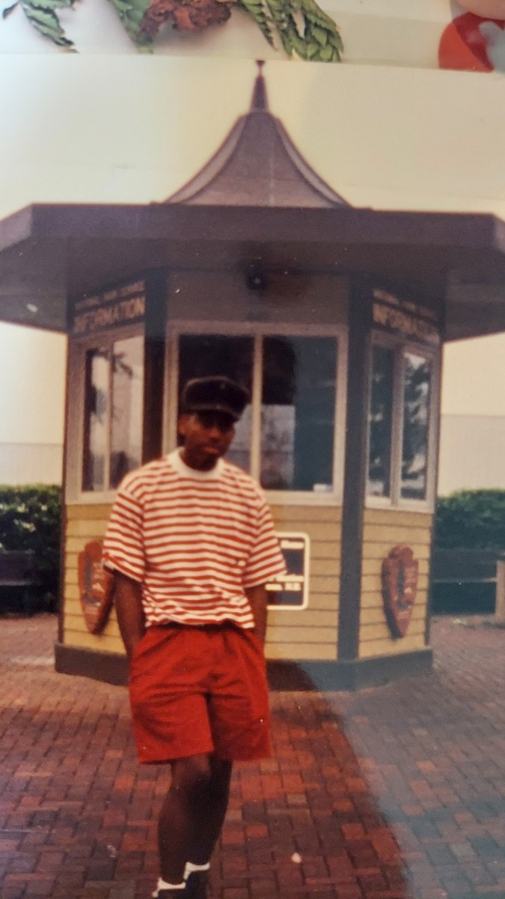

My adult life began in the 90s! I served in the United States Army in the 90s and participated in the Desert Storm campaign.
I was able to do quite a bit of traveling in the 90s through my service in the military. I lived in several different countries but Germany was my favorite.
I learned to snowboard while station in Colorado and visited Pikes Peak all in the 90s!
All of these things and more are the reason why I think the 90s ruled!